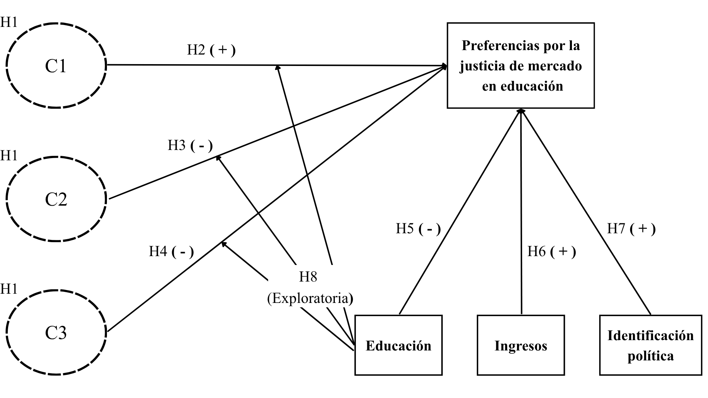

Preferencias de mercado en la educación
El rol de las creencias meritocráticas en el contexto chileno
Tomás Urzúa Moreno
Coloquio de tesistas, Magíster Ciencias Sociales - UCH
14 agosto 2026
Motivación

Tesis enmarcada en proyecto FONDECYT Regular
Alineada con los objetivos de investigación del proyecto enfocado en el área de educación
Más información: jus-mer.com
Contexto y antecedentes
Educación y mercado
Las últimas décadas, la educación ha sido atravesada por procesos de comodificación que han configurado su fundamentos valóricos, así como el funcionamiento de sus instituciones (Ball, 2004; Busemeyer, 2013; Castles et al., 2010; Waslander et al., 2010).
La expansión del área privada ha entrado en una lógica de competencia con la provisión pública, generando un mercado educativo que ha afectado la distribución de oportunidades y calidad de la educación (Busemeyer & Iversen, 2020; Corvalán et al., 2016).
La comodificación de la educación no sólo ha provocado cambios a nivel institucional, sino que también ha moldeado los criterios normativos de las personas sobre qué es lo que consideran justo en el ámbito educativo.
Justicia de mercado en la educación
Las políticas orientadas al mercado operan no sólo como diseños institucionales, sino también como un proyecto moral, donde las personas movilizan valores de mercado como criterios normativos (Fourcade & Healy, 2007; Koos & Sachweh, 2019).
Así, la expansión del mercado en áreas de reproducción social ha impactado los criterios de justicia que movilizan las personas para evaluar la distribución de oportunidades y recursos (Castillo et al., 2024; Lindh, 2015).
En este marco, Lane (1986) propone el concepto justicia de mercado, el cual refiere a:
- Creencias normativas que legitiman la idea de que el acceso a los servicios sociales esenciales -como la educación- debe determinarse según criterios basados en el mercado (Lane, 1986)
Meritocracia
La meritocracia es un elemento que se encuentra en el corazón de las instituciones educativas al considerarse como el determinante para el éxito académico y, posteriormente, la movilidad social (Clycq et al., 2014; Darnon et al., 2018; Jonathan J. B. Mijs, 2016).
Sin embargo, también persiste una relación entre la meritocracia y la legitimación de desigualdades.
- Se recurre al mérito para explicar el éxito individual y el fracaso de los otros, obviando las condiciones estructurales que definen la realidad social (Clycq et al., 2014; Heuer et al., 2020; Jonathan J. B. Mijs, 2021; Morris et al., 2022).
Así, la meritocracia opera como un factor clave en la comprensión de la justicia de mercado en educación.
Marcos de creencias meritocráticas
Las creencias meritocráticas constituyen esquemas mentales que las personas movilizan para discernir entre lo que consideran justo e injusto.
Enfoques unidimensionales vs multidimensionales: un avance hacia la coexistencia de creencias (Castillo et al., 2023; Duru-Bellat & Tenret, 2012; Jonathan J. B. Mijs, 2021)
Dependiendo de las creencias que prevalezcan en las personas, se pueden observar distintas combinaciones de creencias meritocráticas, las cuales tienen diversos niveles de representación en la población en cuanto a cantidad y tamaño (Zhu, 2025).
El contexto chileno
País reconocido por su desigualdad socioeconómica, con una movilidad social rígida y alta estratificación social (Chancel et al., 2026; Espinoza et al., 2013; Flores et al., 2020).
Independientemente de las condiciones estructurales que determinan la desigualdad, se observa un fuerte arraigo de creencias meritocráticas en la población (Castillo et al., 2025; PNUD, 2017).
En materia de educación, Chile ha trazado una trayectoria de más de 50 años de políticas neoliberales, caracterizándose por ser una de las más privatizadas y con mayor segregación escolar en el mundo (Bellei, 2025; Boccardo, 2020; Castles et al., 2010; Valenzuela et al., 2014).
- Esto ha conformado un mercado educativo que traspasa la responsabilidad del éxito a los individuos, reflejando la narrativa del mérito en la legitimación de las desigualdades en educación(Bellei, 2016; Corvalán et al., 2016; Ramos, 2022; Valenzuela et al., 2014).
Preguntas de investigación
¿Cómo se manifiestan los patrones de creencias meritocráticas en cuanto al número de grupos identificables y su tamaño?
¿En qué medida influyen los patrones de creencias meritocráticas en las preferencias por la justicia de mercado en educación?
Esta investigación
Contribuir en la línea de investigación sobre justicia de mercado y meritocracia (Castillo et al., 2026; Castillo et al., 2025, 2024; Lindh, 2015) a partir de dos innovaciones:
Descubrir patrones de creencias meritocráticas en la población chilena mediante métodos centrados en las personas
Analizar la relación entre preferencias por justicia de mercado en educación y los distintos grupos de personas definidos por sus patrones de creencias
Con ello, esta investigación espera:
Demostrar que la meritocracia no opera como un mecanismo uniforme en la justificación de la desigualdad, sino que juega un rol multidimensional que solamente se puede observar al estudiar la heterogeneidad de creencias
Relevar el rol del mercado en los juicios normativos de las personas, con tal de entregar evidencia que permita avanzar en la reivindicación de la educación pública en materia cultural y política
Hipótesis

Métodos
Datos
Encuesta Educación, Meritocracia y Cohesión Social realizada por el FONDECYT N°1210847 en el año 2025
N = 3470
Aplicada mediante CAWI (Computer-Assisted Web Interviewing)
Diseño muestral no probabilístico; cuotas de edad, sexo y nivel educacional
Estrategia analítica
3 pasos
Análisis de clases latentes para identificar patrones de creencias meritocráticas, y luego asignar a cada individuo a un grupo (clase latente)
Los grupos observados son considerados como variables independientes en un modelo de regresión logística, con el objetivo de examinar la relación entre cada grupo con la preferencia por justicia de mercado en educación
Replicación del análisis utilizando datos de población estudiantil a modo de análisis de robustez